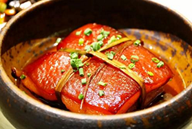
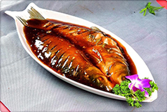
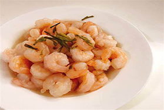
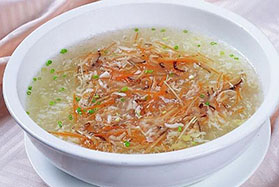
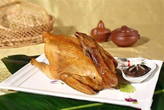
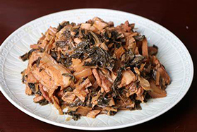
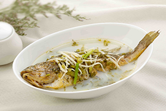
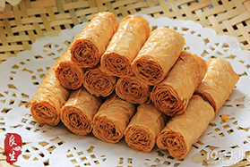

经典菜品
-

东坡肉
以带皮五花肉为主料，辅以黄酒、酱油等慢火焖炖，成品色泽红亮，肥而不腻，入口即化，相传为苏东坡所创，承载杭州历史文化
-

西湖醋鱼
选用鲜活草鱼，以糖醋调味，肉质鲜嫩酸甜，带有蟹香。典故源自南宋“叔嫂传珍”，2018年入选浙江十大经典名菜
-

龙井虾仁
以龙井茶搭配河虾仁，茶香与虾鲜交融，色泽雅丽。传说与乾隆微服私访相关，1972年曾用于国宴
-

宋嫂鱼羹
南宋名菜，鳜鱼或鲈鱼蒸熟剔骨，配笋、火腿等烩制，汤汁鲜滑似蟹羹，因宋五嫂为高宗烹制而得名
-

叫化童鸡
整鸡裹荷叶、黄泥煨烤，肉质酥烂荷香四溢。传说源于乞丐烤鸡，金庸小说中洪七公曾赞其美味
-

干菜焖肉
绍兴传统菜，梅干菜与五花肉同蒸，咸鲜甘美，周恩来曾以此宴客。2018年列为浙江十大经典名菜
-

雪菜大汤黄鱼
舟山名菜，大黄鱼配雪菜、冬笋炖煮，汤色乳白，鲜咸合一，富含蛋白质与微量元素，营养丰富
-

干炸响铃
豆腐皮卷肉末油炸，形如马铃，松脆爽口。传说与英雄取豆皮典故相关，1956年入选杭州名菜